Na okrajích folií 13–46 (Táborského Zpráva) je 68 okrajových přípisků na 30 foliích. Klasifikace: rejstřík: 50 · lat. termín: 10 · dějiny orloje: 8 · pozdější přípisky (jiná ruka): 2. Těžiště rozboru jsou jejich přepisy a interpretace (výřezy ze skenu jsou jen ilustrativní).
1) Rejstříkové glosy — bez nové informace. Drobné okrajové glosy jsou rejstříkový aparát: krátká hesla, která pojmenovávají, co už říká přilehlý text — témata výkladu (české značky „O pušce“, „Srovnání obojí počtuov“), latinské odborné termíny (Index Solis, declinatio solis, Linea oppositionis/coniunctionis, Solstitium, Tabula Horarum Planetarum) a u závěru dějiny orloje a jeho správců. Žádná z nich nepřidává údaj, který by nebyl v hlavním textu: i „historický“ shluk u fol. 38–46 — planetní hodiny, „nebožtík“ Tobiáš a jeho škody, učedník Jakub Špaček, obnovení orloje — doslovně odpovídá tělu textu (ověřeno proti přepisu týchž folií). Jejich přínos je navigační, interpretační a terminologický, nikoli faktografický.
2) Pozdější přípisky jinou rukou — tady je nová informace. Kromě rejstříku jsou v knize
obsažnější vsuvky pozdější rukou (jiná, mladší ruka než opisovač A), které skutečně něco
přidávají:
• fol. 22 — přestavba měsíční koule: „Nyní jest to jinače spraveno a lehčeji, neboť
žádných koleček není, které by měsícem hýbali… nežli vnitř v tlustosti měsíce jest příprava dosti
sprostá, však předce dosti trefně vymyšlená, tak že samým otočováním se měsíce po sféře v 24
hodinách corpus lunae o 1 grad se pohne, a v 30 dnech celý se obrátí…“ — pisatel zde
dokládá, že původní soukolíový pohon měsíce (popsaný Táborským) byl nahrazen jednodušším
mechanismem uvnitř tělesa měsíce. To je doklad reálné konstrukční změny orloje, jaký
Táborského text nemá. Písmo se s dobrou pravděpodobností shoduje s rukou Astrolabia parvum
(fol. 70–79) a komputistické prózy (fol. 62–68) — tedy orlojníka-astronoma činného
~1641–1642 (týž pravý sklon, hnědý inkoust a mísení latiny: corpus lunae, gradus,
sphera). Slovem „nyní“ tak datuje přestavbu měsíce k ~1641–1642 (proběhla tedy
mezi Táborského popisem /~1570, opis 1587/ a touto pozdější astronomickou vrstvou). Dataci vrstvy
nezávisle ukotvuje výpočet příkladu z 1. XI 1642 v Astrolabiu (skript
tools/verify_astrolabe_1642.py). Tím revidujeme dřívější přiřazení Mikuláši
Petrovi /~1628/; doporučena expertní verifikace na originále.
• fol. 38 — autorství a List purkmistra: „… léta 1410 … ten orloj … dělal … vide
list purkm[istra] … origl., sub figura 4“ — proti Táborského dataci „mistr Hanuš okolo 1490“
tu pisatel odkazuje na List purkmistra (Littera Maior), totiž na opis z r. 1628 původní
listiny z r. 1410, jíž pražská rada smluvila zhotovení orloje s mistrem Mikulášem z Kadaně
(v téže knize, fol. 51–54; originál listiny v knize není). Tím klade zhotovení orloje k r. 1410
/ Mikulášovi z Kadaně, ne Hanušovi. Písmo je mladší plynulá kurzíva 17. stol. (ne ruka opisovače A z 1587) a odkaz „sub
figura 4“ předpokládá, že List purkmistra už byl v knize a očíslován — přípisek je tedy
pozdější (po r. 1628, kdy List purkmistra do knihy vepsal a očísloval Mikuláš Petr;
podpis na fol. 52: „… 15. 9bri [Novembris] 1628. Mikuláš Petr“). Jde o jinou ruku než
vsuvka o měsíční kouli na fol. 22 (ta je ruka C) — writer-ID ani vizuální paleografie obě
vsuvky neztotožnily. Klademe ji proto k pozdějším rukám ≥1628, přičemž B vs C zůstává
nerozhodnuto; obsahově mírně svědčí pro B (Mikuláš Petr, který List purkmistra do knihy
vepsal a křížově naň odkazuje). Rozhodne expertní autopsie. Historický obsah — zhotovení
orloje r. 1410 mistrem Mikulášem z Kadaně — tím dotčen není.
Rejstříkové glosy (vč. „historických“): jedna ruka, totožná s opisovačem. Na rozdíl od obou pozdějších vsuvek výše jsou rejstříkové glosy fol. 13–46 (i ty s historickým obsahem jako „Tobiáš umřel“) jednou rukou — touž českou novogotickou kurzívou, týmž duktem a inkoustem jako hlavní text (srovnání „Tobiáš umřel“ / „Jakub Špaček“ / „Index Slunce“ navzájem i s tělem textu). Přisuzujeme je proto ruce A — Matouši Carchesiovi Jablonskému, opisovači z r. 1587; jde o autorský/písařský rejstřík, ne o cizí čtenářskou ruku. Odstín inkoustu vychází měřením proti tělu textu nepatrně světlejší a méně teplý (Δ jasu +13–15, Δ „tepla“ R−B −18 až −34 z 256), což je však zčásti artefakt tenčího tahu — týž železo-duběnkový hnědý inkoust, psaný jemnějším perem.
Ztotožnění s jinými písaři a datace. Marginálie se neshodují s žádnou z pozdějších rukou knihy — německého Listu purkmistra (1628), komputistické sekce (~1641) ani přední Hájkovy tabule a přípisku (~1689); ty jsou jiným písmem a fyzicky v jiných částech. Protože marginálie indexují tělo textu a jsou rukou A, vznikly současně s opisem, tj. r. 1587 (nebo těsně po něm) — tím je lze datovat, na rozdíl od pozdějších přípisků jinde v knize. Výjimkou mohou být ojedinělé „NB“, jež bývají rukou pozdějšího čtenáře. (Paleografie i kolorimetrie ze skenu = pracovní hypotéza, ne znalecký posudek; jistota střední.)
Výřezy jsou drobné studijní reprodukce ze skenů Archivu hlavního města Prahy (Sbírka rukopisů, inv. č. 7916), uvedené pro ilustraci; souhlas archivu s reprodukcí v jednání. Závazný je přepis, ne obrázek.
fol. 13 — Táborský — kap. VI (pokrač.) · přepis folia →
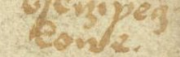
- dějiny orloje Tobiáše[?] ztraceni dva
fol. 14 — Táborský — kap. VI (pokrač.) · přepis folia →
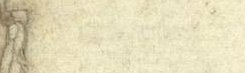
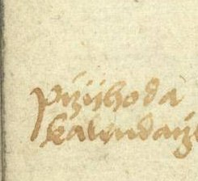
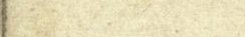
- rejstřík Dílo kliky kalendáře
- rejstřík Příchod[?] kalendáře
fol. 15 — Táborský — kap. VI (pokrač.) · přepis folia →
- lat. termín Solstitium letní
- lat. termín Solstitium zimní
- rejstřík Postupování hodin[?]
- rejstřík dochází zimní/letní[?
fol. 16 — Táborský — kap. VI (pokrač.) · přepis folia →
- rejstřík Kalendář sám jíti[?
fol. 17 — Táborský — kap. VI (pokrač.) · přepis folia →
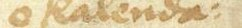
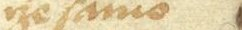
- rejstřík o kalendáři sám jíti
fol. 18 — Táborský — kap. VII: vypsání první strany a sféry · přepis folia →
- rejstřík O uváznutí[?
fol. 19 — Táborský — kap. VII (pokrač.) · přepis folia →
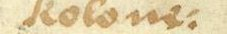
- rejstřík Hlavní (minutní) kolo
- rejstřík O třech kolích sphernních
- rejstřík O zodyaku
- rejstřík první a druhé kolo[?
fol. 20 — Táborský — kap. VII (pokrač.) · přepis folia →
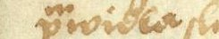
- rejstřík O vohnutém pravidlu[?]
- lat. termín Index Solis
- lat. termín declinatio solis
- lat. termín Index měsíce
- lat. termín Linea oppositionis
fol. 21 — Táborský — kap. VII (pokrač.) · přepis folia →
- lat. termín Linea coniunctionis
- rejstřík Zdržování slunce při zodyaku
- lat. termín Slunce odstupuje od circuli[?
fol. 22 — Táborský — kap. VII (pokrač.) · přepis folia →
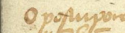
- rejstřík O postupování lišty[?] po prutu
- lat. termín O měsíci, k zodyaku zůstávání a po indexu postupování
- rejstřík O kolečku hnutedlném
- rejstřík Kterak přibývá a ubývá měsíce
pozdější přípisek (jiná ruka) Nyní jest to jinače spraveno a lehčeji, neboť žádných koleček není, které by měsícem hýbali, viděti není, nežli vnitř v tlustosti měsíce jest příprava dosti sprostá, však předce dosti trefně vymyšlená, tak že samým otočováním se měsíce po sféře v 24 hodinách corpus lunae o 1 grad se pohne, a v 30 dnech celý se obrátí, a svau náležitost vykonává; a kdyby se někdy jaký omyl přihodil, samým otočením se napraví
fol. 23 — Táborský — kap. VII (pokrač.) · přepis folia →
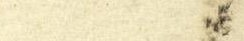
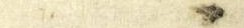
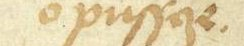
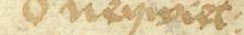
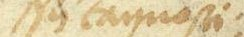
- rejstřík O pušce
- rejstřík O tom v kap. VII
- rejstřík O nesnadné tajnosti[?
fol. 25 — Táborský — kap. VIII–IX: kola slunce a měsíce; kolo sluneční · přepis folia →
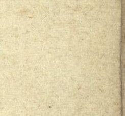
- rejstřík O oblanku
fol. 26 — Táborský — kap. IX: kolo sluneční (pokrač.) · přepis folia →
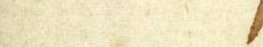
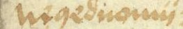
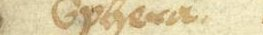
- rejstřík O malé spheře
- rejstřík Nejednomístné spouštění hodin[?]
- rejstřík Malá sphera
fol. 27 — Táborský — kap. X: hlavní kolo (proč se neobrátí jednou za hodinu) · přepis folia →
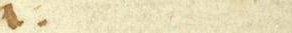
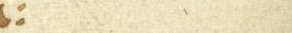
- rejstřík Summa působení kola sluncového
- rejstřík Počet zubuov
fol. 29 — Táborský — kap. XII: kolo měsíce · přepis folia →
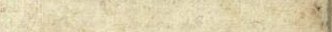
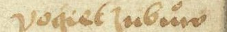
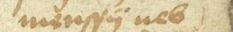
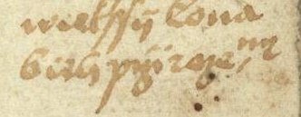
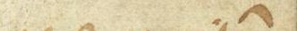
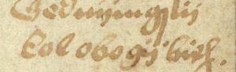
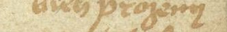
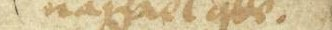
- rejstřík počet zubuov menší neb větší
- rejstřík běh přirozený nazpátek jde
- rejstřík jediné kolo obojí běh
- rejstřík kolikrát se srovnají
fol. 30 — Táborský — kap. XIII: zpravení pochybení v běhu měsíce a slunce · přepis folia →
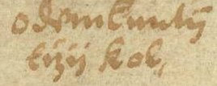
- rejstřík o odemknutí tří kol
fol. 31 — Táborský — kap. XIII (pokrač.) · přepis folia →
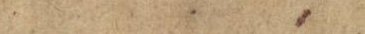
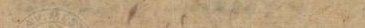
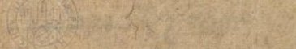
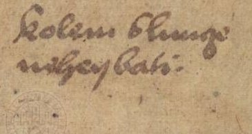
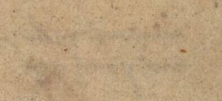
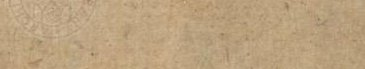
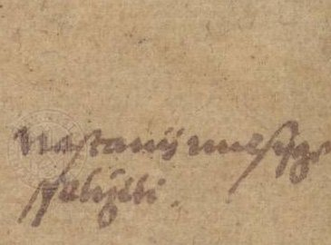
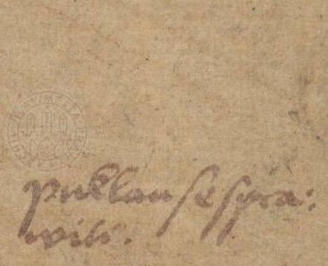
- rejstřík Kolem slunce nehejbati
- rejstřík [Když] nastává měsíc, šetřiti
- rejstřík puklau se spraví
fol. 32 — Táborský — kap. XIV: napravení kalendáře s počtem hodin · přepis folia →
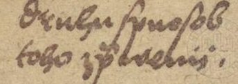
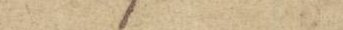
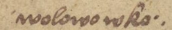
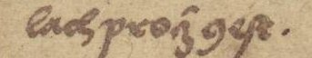
- rejstřík druhý spuosob toho zpravení
- rejstřík volovo v kolách proč jest
fol. 35 — Táborský — kap. XVI: počet polouorlojní · přepis folia →
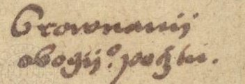
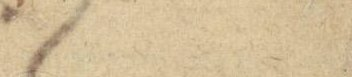
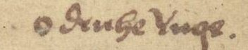
- rejstřík Srovnání obojí počtuov
fol. 36 — Táborský — kap. XVII: měnění a neustavičnost orloje · přepis folia →
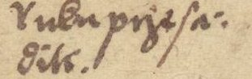
- rejstřík ruku přesazovati
fol. 37 — Táborský — kap. XVIII: summa spisu · přepis folia →
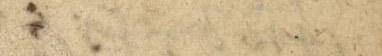
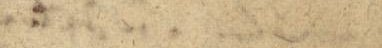
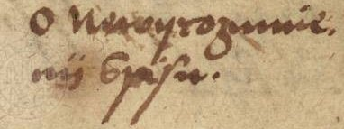
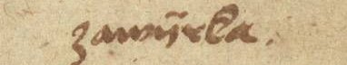
- rejstřík O pilnosti a bedlivosti
- rejstřík O nevyrozumění spisu
fol. 38 — Táborský — kap. XVIII: summa spisu (pokrač.) · přepis folia →
- dějiny orloje Václav Zvůnek, třetí zprávce
pozdější přípisek (jiná ruka) […] léta 1410 […] ten orloj […] dělal […] vide list purkm[istra] […] origl., sub figura 4
fol. 39 — Táborský — kap. XVIII: summa spisu (pokrač.) · přepis folia →
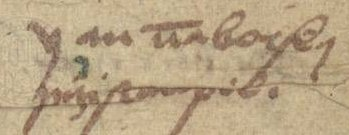
- dějiny orloje Jan Táborský přistaupil
fol. 40 — Táborský — kap. XVIII: summa spisu (pokrač.) · přepis folia →
- rejstřík blud měsíce
- rejstřík tryblík jeho
fol. 41 — Táborský — kap. XVIII: summa spisu (pokrač.) · přepis folia →
- rejstřík O napravení bludu [měsíce], fig.[?]
- rejstřík Rozebrání orloje
- rejstřík Herštuky nové
fol. 42 — Táborský — kap. XVIII: summa spisu (pokrač.) · přepis folia →
- rejstřík Přídavky na spheru
- rejstřík Pukla
- rejstřík Druhý způsob běhu [slunce a měsíce], fig.[?
fol. 43 — Táborský — závěr: osobní zpráva o orloji a jeho opravách · přepis folia →
- rejstřík hodiny planetní
- lat. termín Tabula horarum planetarum
- dějiny orloje Obnovení orloje
- dějiny orloje Tobiáš umřel
fol. 44 — Táborský — závěr (pokrač.) · přepis folia →
- dějiny orloje Táborský zase přistaupil
- dějiny orloje škody po Tobiášovi
fol. 45 — Táborský — závěr (pokrač.) · přepis folia →
- rejstřík čehož jsau nevyšetřili[?
fol. 46 — Táborský — závěr: „summou krátce zavírám“ (pokrač.) · přepis folia →
- dějiny orloje Jakub Špaček
- rejstřík Summa